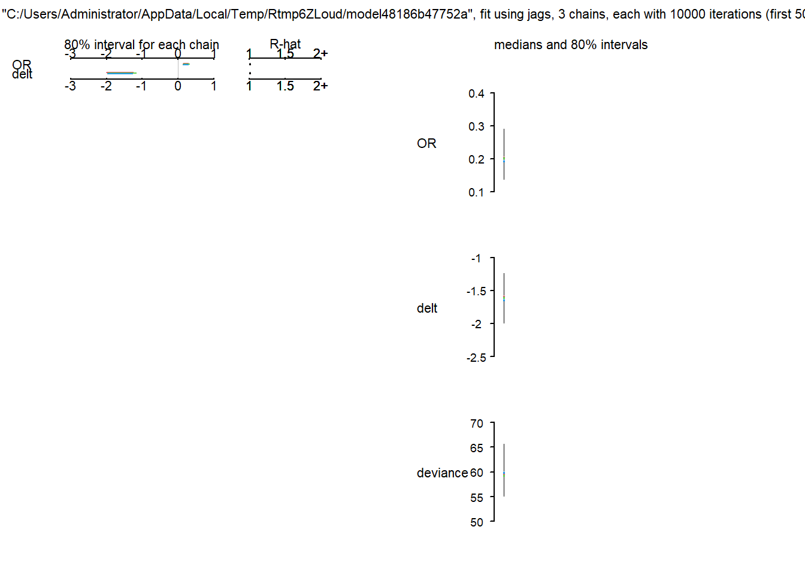
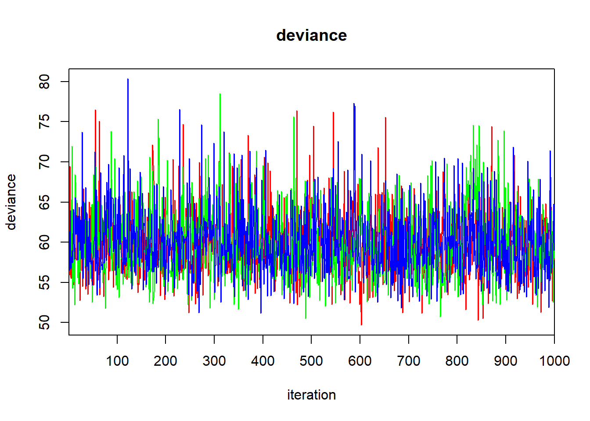
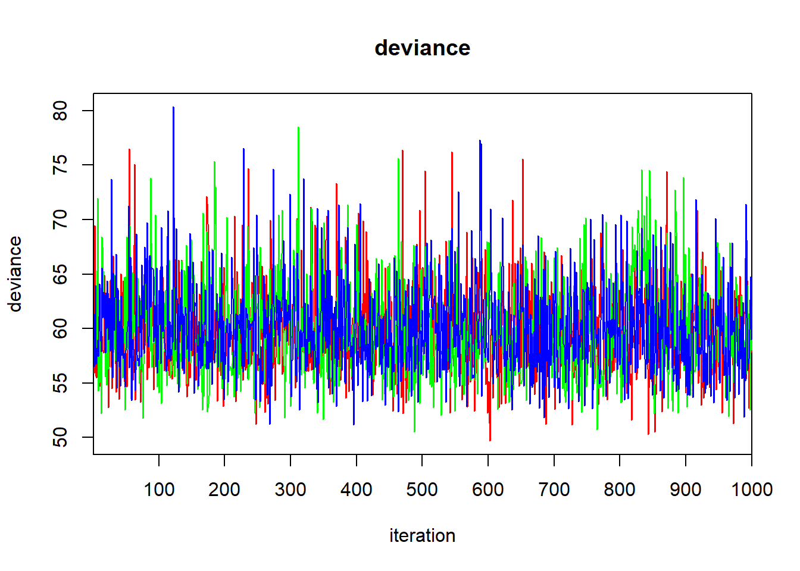
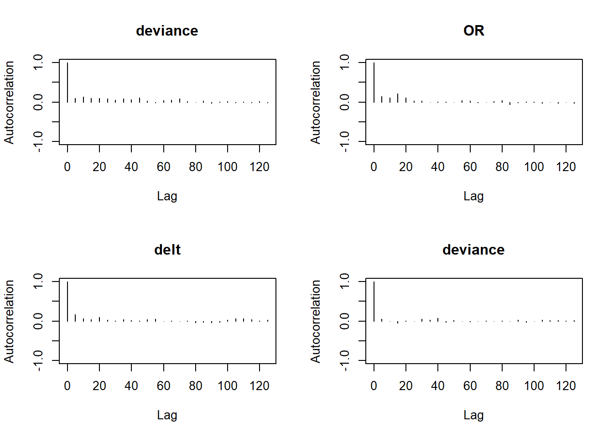
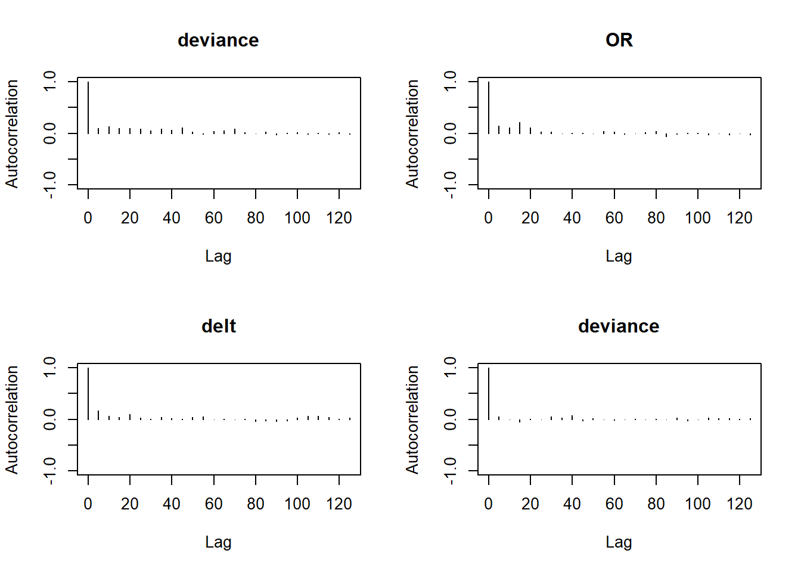
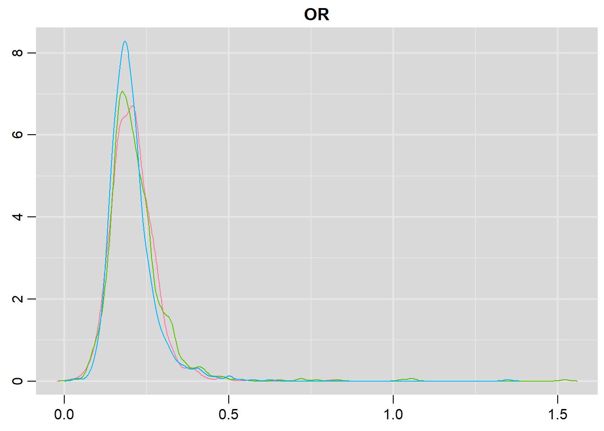
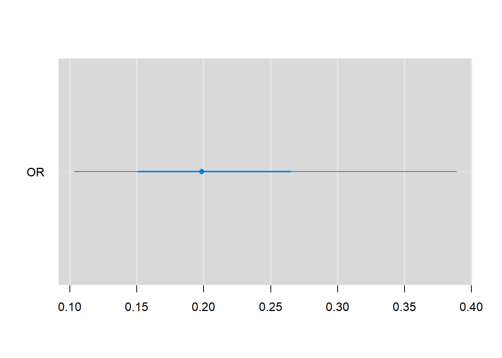
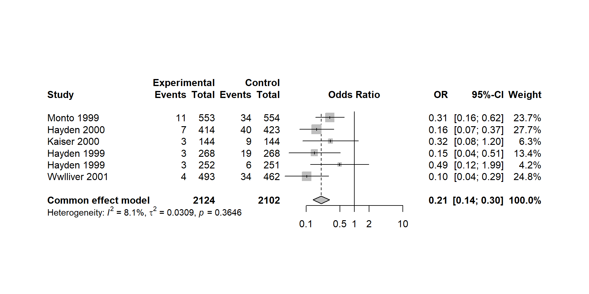

cooper2004
mulifeng
2021/7/9
Comprehensive decision analytical modelling in economic evaluation: a Bayesian approach(doi:10.1002/hec.804)
pair-wise meta-analysis 贝叶斯方法
加载程序包
library(R2jags)一、神经氨酸酶抑制剂预防流感
# 自建模
if(T){
bayes_mod <- function(){
for (i in 1:NS) {
rc[i] ~ dbin(pc[i], nc[i]) # likelihood
rt[i] ~ dbin(pt[i], nt[i]) # likelihood
logit(pc[i]) <- mu[i] # model
logit(pt[i]) <- mu[i] + delta[i] # model
mu[i] ~ dnorm(0, 0.1)
delta[i] ~ dnorm(delt, pre) # delt代表overall mean LOR
}
delt ~ dnorm(0, 0.0001) # Flat Normal prior for delt
pre <- 1/(tau*tau)
tau ~ dunif(0, 10) # Wide Uniform prior for tau
#delt <- log(OR) # 注意理解为什么这样的指定方式是错误的
OR <- exp(delt)
### 在建模的过程中，可以先写出likelihood，likelihood一般左边为data，然后再写
### 模型，模型连接参数(parameters)和likelihood；最后为参数指定先验分布
}
# 初始值
if(T){
inits1 <- list(delta = rep(0.5, 6), mu = rep(0.4, 6),
delt = 0.1, tau = 0.1)
inits2 <- list(delta = rep(0.4, 6), mu = rep(0.5, 6),
delt = 0.2, tau = 0.1)
inits3 <- list(delta = rep(0.6, 6), mu = rep(0.6, 6),
delt = 0.1, tau = 0.2)
inits <- list(inits1, inits2, inits3)
}
}二、论文中的模型
if(T){
bayes_mod <- function(){
for( i in 1 : NS)
{
rc[i] ~ dbin(pc[i], nc[i])
rt[i] ~ dbin(pt[i], nt[i])
logit(pc[i]) <- mu[i] # 如果写为mu[i] <- logit(pc[i]) 会报错：Unknown variable pc
logit(pt[i]) <- mu[i] + delta[i]
# delt = pooled log odds ratio & precision.tau = between-study precision
delta[i] ~ dnorm(delt, precision.tau)
mu[i] ~ dnorm(0, 0.1)
}
delt ~ dnorm(0, 0.0001)
tau ~ dunif(0, 10)
precision.tau <- 1/tau.squared
tau.squared <- tau*tau
OR <- exp(delt)
}
# 设定初始值
if(T){
inits1 <- list(delta = rep(0.5, 6), mu = rep(0.4, 6),
delt = 0.1, tau = 0.1)
inits2 <- list(delta = rep(0.4, 6), mu = rep(0.5, 6),
delt = 0.2, tau = 0.1)
inits3 <- list(delta = rep(0.6, 6), mu = rep(0.6, 6),
delt = 0.1, tau = 0.2)
inits <- list(inits1, inits2, inits3)
}
}第三个模型
if(T){
bayes.mod <- function(){
for (i in 1:NS) {
rt[i] ~ dbin(pt[i], nt[i])
rc[i] ~ dbin(pc[i], nc[i])
logit(pt[i]) <- logit(pc[i]) + delta[i]
delta[i] ~ dnorm(delt, prec)
}
delt ~ dnorm(0, 0.0001) # vague prior
prec <- 1/tau.squared
tau.squard <- tau*tau
tau ~ dunif(0, 10)
OR <- exp(delt) # 设定其它参数
}
# initial value
if(T){
inits1 <- list(delta = rep(0.5, 6), #mu = rep(0.4, 6),
delt = 0.1, tau = 0.1)
inits2 <- list(delta = rep(0.4, 6), #mu = rep(0.5, 6),
delt = 0.2, tau = 0.1)
inits3 <- list(delta = rep(0.6, 6), #mu = rep(0.6, 6),
delt = 0.1, tau = 0.2)
inits <- list(inits1, inits2, inits3)
}
}nc <- c(554, 423, 144, 268, 251, 462)
rc <- c(34, 40, 9, 19, 6, 34)
nt <- c(553, 414, 144, 268, 252, 493)
rt <- c(11, 7, 3, 3, 3, 4)
NS <- 6 # 研究数 number of studies
jags_dat <- list('nc', 'rc', 'nt', 'rt', 'NS')
jags_params <- c("delt", "OR")
bayes.mod.fit <- jags(data = jags_dat, inits = inits,
parameters.to.save = jags_params, n.chains = 3, n.iter = 10000,
n.burnin = 5000, model.file = bayes_mod)## Compiling model graph
## Resolving undeclared variables
## Allocating nodes
## Graph information:
## Observed stochastic nodes: 12
## Unobserved stochastic nodes: 14
## Total graph size: 65
##
## Initializing modelprint(bayes.mod.fit)## Inference for Bugs model at "C:/Users/Administrator/AppData/Local/Temp/Rtmp6ZLoud/model48186b47752a", fit using jags,
## 3 chains, each with 10000 iterations (first 5000 discarded), n.thin = 5
## n.sims = 3000 iterations saved. Running time = 0.83 secs
## mu.vect sd.vect 2.5% 25% 50% 75% 97.5% Rhat n.eff
## OR 0.211 0.082 0.103 0.165 0.198 0.241 0.389 1.007 660
## delt -1.614 0.330 -2.272 -1.804 -1.617 -1.422 -0.945 1.007 660
## deviance 60.014 4.216 53.206 56.937 59.507 62.507 69.743 1.001 2500
##
## For each parameter, n.eff is a crude measure of effective sample size,
## and Rhat is the potential scale reduction factor (at convergence, Rhat=1).
##
## DIC info (using the rule: pV = var(deviance)/2)
## pV = 8.9 and DIC = 68.9
## DIC is an estimate of expected predictive error (lower deviance is better).plot(bayes.mod.fit)
traceplot(bayes.mod.fit) 

bayes.mod.fit.mcmc <- as.mcmc(bayes.mod.fit)
summary(bayes.mod.fit.mcmc)##
## Iterations = 5005:10000
## Thinning interval = 5
## Number of chains = 3
## Sample size per chain = 1000
##
## 1. Empirical mean and standard deviation for each variable,
## plus standard error of the mean:
##
## Mean SD Naive SE Time-series SE
## delt -1.6143 0.33025 0.006030 0.008814
## deviance 60.0141 4.21618 0.076977 0.107577
## OR 0.2106 0.08189 0.001495 0.002204
##
## 2. Quantiles for each variable:
##
## 2.5% 25% 50% 75% 97.5%
## delt -2.2720 -1.8045 -1.6174 -1.4217 -0.9448
## deviance 53.2056 56.9368 59.5072 62.5066 69.7429
## OR 0.1031 0.1646 0.1984 0.2413 0.3887library(coda)
library(lattice)
lattice::xyplot(bayes.mod.fit.mcmc)densityplot(bayes.mod.fit.mcmc)
densityplot(bayes.mod.fit.mcmc, layout=c(2,2), aspect="fill")
plot(bayes.mod.fit.mcmc) # trace图和密度图在一起
autocorr.plot(bayes.mod.fit.mcmc) # 自相关图 

library(mcmcplots)## Registered S3 method overwritten by 'mcmcplots':
## method from
## as.mcmc.rjags R2jagsdenplot(bayes.mod.fit.mcmc)
denplot(bayes.mod.fit.mcmc, parms = c("OR"))
traplot(bayes.mod.fit.mcmc, parms = c("OR"), style = "gray")
# produce html files with trace, density, and autocorrelation plots all on one page
mcmcplot(bayes.mod.fit.mcmc) ## Preparing plots for delt. 33% complete.## Preparing plots for deviance. 67% complete.## Preparing plots for OR. 100% complete.# produce a coefficient dot plot with credible intervals
caterplot(bayes.mod.fit.mcmc)
caterplot(bayes.mod.fit.mcmc, parms = c("OR"), labels = c("OR"))
library(ggmcmc)## Registered S3 method overwritten by 'GGally':
## method from
## +.gg ggplot2# convert MCMC object into a ggs object
bayes.mod.fit.gg <- ggs(bayes.mod.fit.mcmc)
ggs_density(bayes.mod.fit.gg)# use the ggmcmc command to create a PDF file containing a variety of diagnostic plots
# ggmcmc(bayes.mod.fit.gg, file = "./ggmcmccommandproduce.pdf")library(superdiag)
superdiag(bayes.mod.fit.mcmc, burnin = 100)## Number of chains = 3
## Number of iterations = 1000 per chain before discarding the burn-in period
## Burn-in period = 100 per chain
## Sample size in total = 2703
##
## ****************** The Geweke diagnostic: ******************
## Windows:
## chain 1 chain 2 chain 3
## From start 0.1 0.4494 0.5816
## From stop 0.5 0.2235 0.0620
##
## Z-scores:
## chain 1 chain 2 chain 3
## delt -1.425 0.1907 0.15210
## deviance 1.617 -1.2120 0.96252
## OR -1.698 0.1668 -0.03474
##
## *************** The Gelman-Rubin diagnostic: ***************
## Potential scale reduction factors:
## Point est. Upper C.I.
## delt 1.008 1.015
## deviance 1.000 1.002
## OR 1.038 1.052
##
## Multivariate psrf: 1.0049
##
## ************* The Heidelberger-Welch diagnostic ************
## Chain 1:
## epsilon=0.1, alpha=0.05
## Stationarity start p-value
## test iteration
## delt passed 1 0.2689
## deviance passed 1 0.1446
## OR passed 1 0.1810
##
## Halfwidth Mean Halfwidth
## test
## delt passed -1.6077 0.044897
## deviance passed 59.9011 0.299003
## OR passed 0.2102 0.007015
##
## Chain 2:
## epsilon=0.167, alpha=0.1
## Stationarity start p-value
## test iteration
## delt passed 1 0.8093
## deviance passed 1 0.8180
## OR passed 1 0.8639
##
## Halfwidth Mean Halfwidth
## test
## delt passed -1.590 0.03740
## deviance passed 59.908 0.57297
## OR passed 0.219 0.01112
##
## Chain 3:
## epsilon=0.018, alpha=0.1
## Stationarity start p-value
## test iteration
## delt passed 1 0.1651
## deviance passed 92 0.2030
## OR passed 1 0.1737
##
## Halfwidth Mean Halfwidth
## test
## delt passed -1.6314 0.02723
## deviance passed 60.0393 0.27779
## OR failed 0.2058 0.00574
##
## *************** The Raftery-Lewis diagnostic ***************
## Chain 1:
## Convergence eps = 0.001
## Quantile (q) = 0.025
## Accuracy (r) = +/- 0.005
## Probability (s) = 0.95
##
## You need a sample size of at least 3746 with these values of q, r and s
##
## Chain 2:
## Convergence eps = 0.0025
## Quantile (q) = 0.1
## Accuracy (r) = +/- 0.005
## Probability (s) = 0.975
##
## You need a sample size of at least 18086 with these values of q, r and s
##
## Chain 3:
## Convergence eps = 2e-04
## Quantile (q) = 0.05
## Accuracy (r) = +/- 0.001
## Probability (s) = 0.95
##
## You need a sample size of at least 182470 with these values of q, r and s
##
## ************* The Hellinger distance diagnostic ************
## Between chains:
## Min Max
## delt 0.09228 0.11567
## deviance 0.04528 0.05853
## OR 0.09805 0.11904
##
## Within chain 1:
## 180 360 540 720
## delt 0.1393 0.1376 0.06688 0.11048
## deviance 0.1067 0.1181 0.09007 0.05619
## OR 0.1327 0.1187 0.06372 0.10361
##
## Within chain 2:
## 180 360 540 720
## delt 0.11188 0.17105 0.15420 0.1710
## deviance 0.05893 0.09467 0.06439 0.1327
## OR 0.15394 0.18566 0.16276 0.1821
##
## Within chain 3:
## 180 360 540 720
## delt 0.09023 0.13283 0.1159 0.11494
## deviance 0.08588 0.07352 0.1011 0.09027
## OR 0.11196 0.14452 0.1333 0.13101使用频率学方法的pairwise meta-analysis分析相同数据，并进行比较
library(meta)## Warning: package 'meta' was built under R version 4.4.2## Loading required package: metadat## Loading 'meta' package (version 8.0-1).
## Type 'help(meta)' for a brief overview.##
## Attaching package: 'meta'## The following object is masked from 'package:ggmcmc':
##
## cidata <- data.frame(event.e = c(11, 7, 3, 3, 3, 4),
n.e = c(553, 414, 144, 268, 252, 493),
event.c = c(34, 40, 9, 19, 6, 34),
n.c = c(554, 423, 144, 268, 251, 462),
study = c("Monto", "Hayden", "Kaiser", "Hayden", "Hayden", "Wwlliver"),
year = c("1999", "2000", "2000", "1999", "1999", "2001"))
metaresult <- metabin(event.e, n.e, event.c, n.c, data = data,
sm = "OR",studlab = paste(study, year), comb.random = F)## Warning: Use argument 'random' instead of 'comb.random' (deprecated).forest(metaresult) 
# 基于频率学方法的meta分析结果显示，OR 95%CI为0.21[0.14; 0.30]